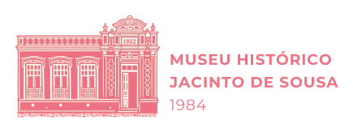

Patrimônio cultural
Uma construção histórica que guarda memórias, objetos e narrativas do município.

Patrimônio histórico de Quixadá
O Museu Histórico Jacinto de Sousa preserva narrativas, objetos e imagens que ajudam a contar a história de Quixadá e de seu povo. A experiência digital propõe um encontro entre memória e criação: três releituras de obras de Jacinto de Sousa em Realidade Aumentada ao redor do Monumento do Trabalhador.
O museu
Inicialmente casa familiar, a construção secular datada de 1922 cedia há décadas um dos principais pontos turísticos da cidade. Instituída como Museu Histórico em 1984, somando-se posteriormente o nome de Jacinto de Sousa, importante artista quixadaense, a instituição tornou-se referência para a preservação da memória local.
O Museu reúne, conserva e disponibiliza acervo histórico-cultural com cinco salas permanentes e duas temporárias, retratando especialmente parte da história do município. Atua também como espaço socioeducativo, aproximando comunidade, visitantes, estudantes e pesquisadores da cultura de Quixadá.
Uma construção histórica que guarda memórias, objetos e narrativas do município.
Cinco salas permanentes e duas temporárias dedicadas à história, à cultura e à memória local.
Um ambiente de visitação, pesquisa e educação patrimonial para moradores e visitantes.
Realidade aumentada
A experiência usa câmera e localização para posicionar três releituras de obras de Jacinto de Sousa ao redor do monumento. Ao caminhar pelo espaço, o visitante encontra cada imagem como uma nova camada de leitura sobre arte, trabalho e memória.
A câmera abre em tela cheia. Para sair, toque no botão de fechar no topo da tela.
Visitação
Cultura, história e memória em um espaço dedicado à preservação do patrimônio cultural de Quixadá.